Honoring our ancestors through ceremony, danza, and community.
Día de Muertos is a sacred tradition centered on honoring and remembering our ancestors and loved ones who have passed. This practice includes the creation of an ofrenda, or altar, adorned with symbolic elements such as cempasúchil (marigold flowers), candles, and the favorite foods and beverages of those being remembered. Through these offerings, we welcome their spirit back to be with us in a meaningful and celebratory way.
Kalpulli Ehecacoatl hosts an annual Día de Muertos ceremony in Watsonville, California. This public gathering brings together community members and danza groups from across the region to share in prayer, movement, and remembrance. Through danza and ceremony, we honor the lives of our ancestors while keeping our traditions alive.
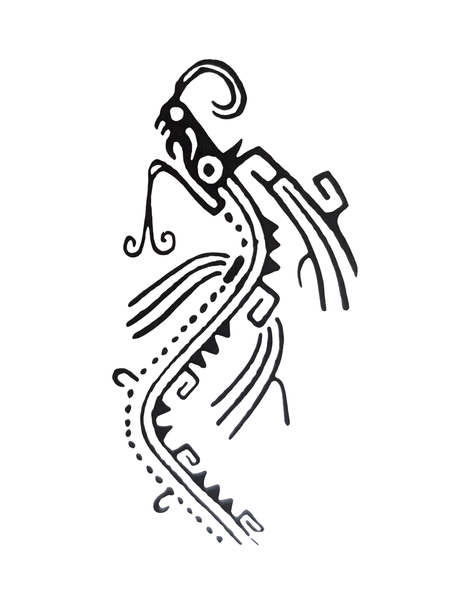
This year for our 2nd annual 2025 Día de Muertos ceremony we were blessed with approximately 200 attendees.
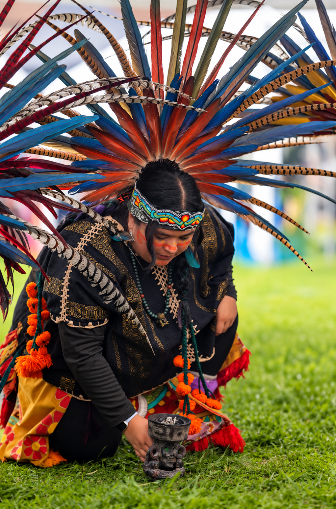
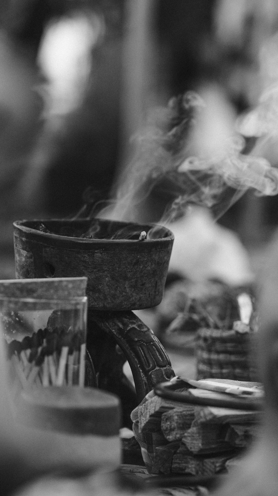
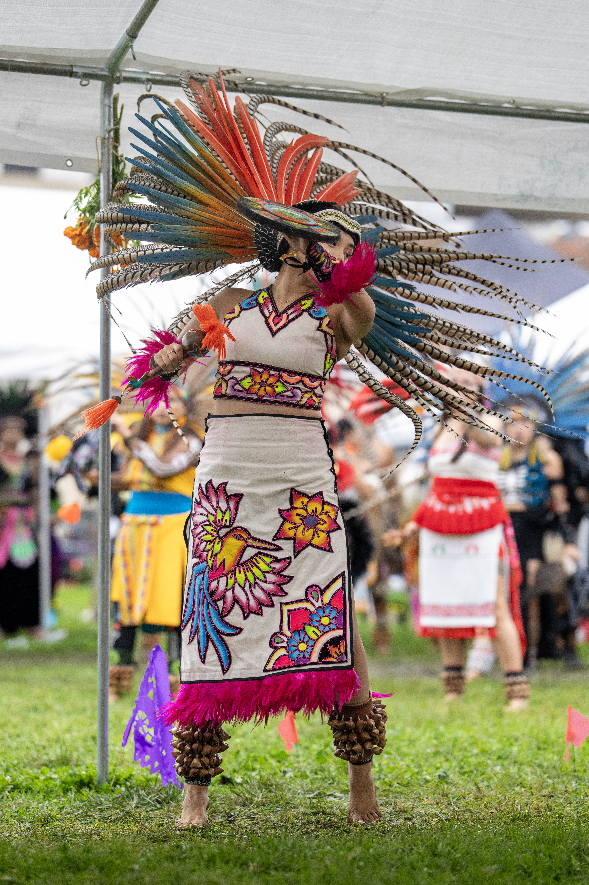
The arch in our ceremony represents the horizon sky. The warm tones of orange and red reflect the transition from day into night. Flowers and adornments symbolize the stars, representing the natural cycle of life and death.
Our altar is composed of essential elements that help us honor and connect with our ancestors. Each item carries symbolic meaning and serves to welcome their spirit.
The light of the candles guides our loved ones back to us, illuminating their path.
Known in Nahuatl as cempowalxochitl, meaning "twenty flowers," these bright orange petals and their strong scent guide spirits home.
A traditional woven mat that symbolizes rest, life, and death, and the connection between the physical and spiritual worlds.
Tamales represent the human body and our connection to maize. Many Indigenous cultures refer to themselves as hijos de maíz — children of corn — reflecting the deep relationship between identity, sustenance, and the earth.
We are incredibly grateful for the overwhelming support that made this event possible. Members of our community contributed countless hours, resources, and energy to bring this ceremony to life. We also extend our appreciation to local businesses and organizations whose donations supported key elements such as the altar, community spaces, and shared meals.
Special thanks to Adela Naranjo for her generous contribution as a community member.
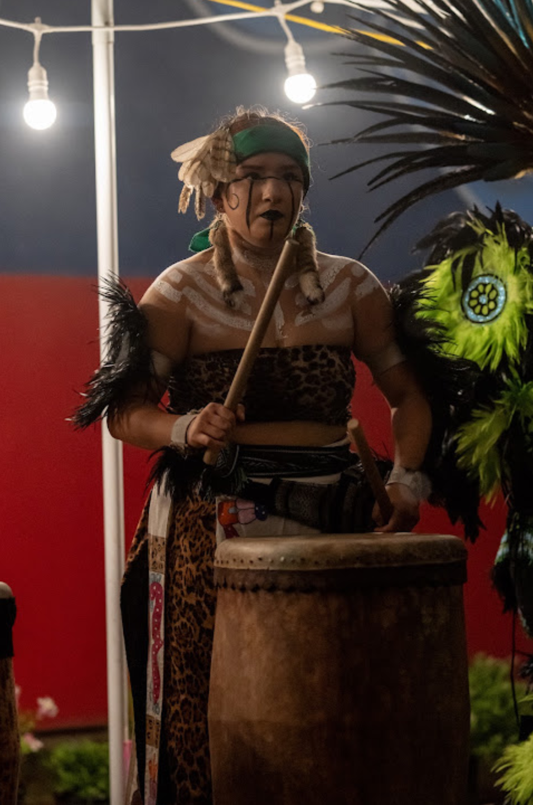
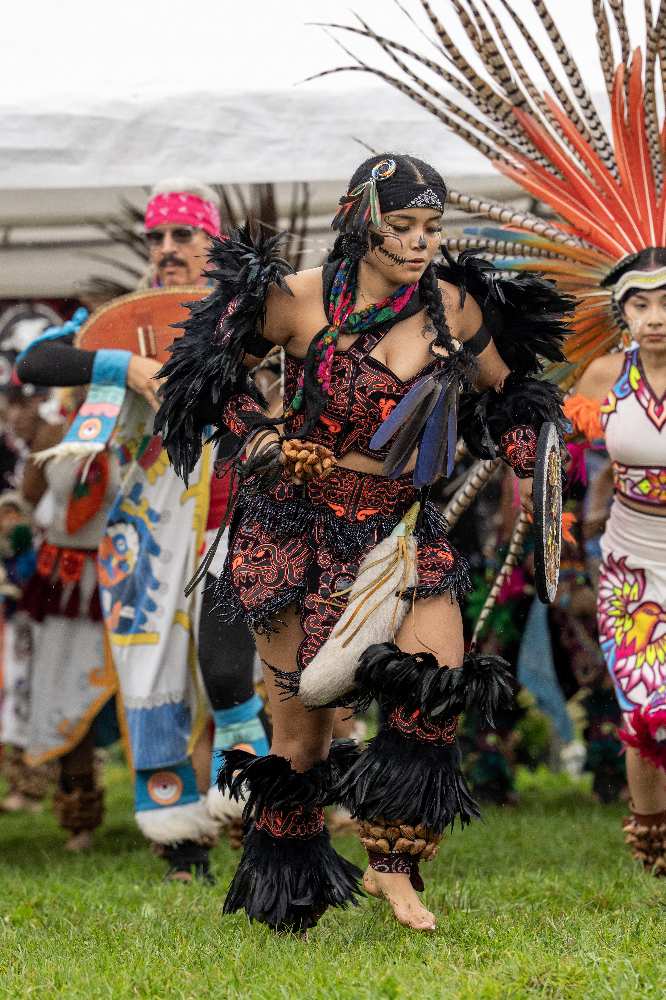
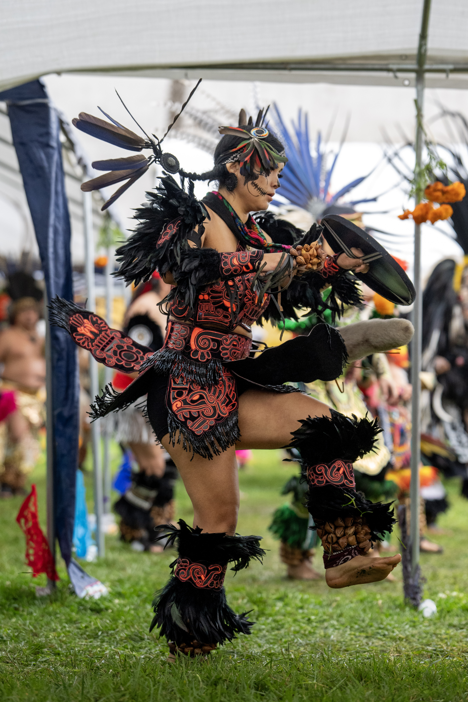
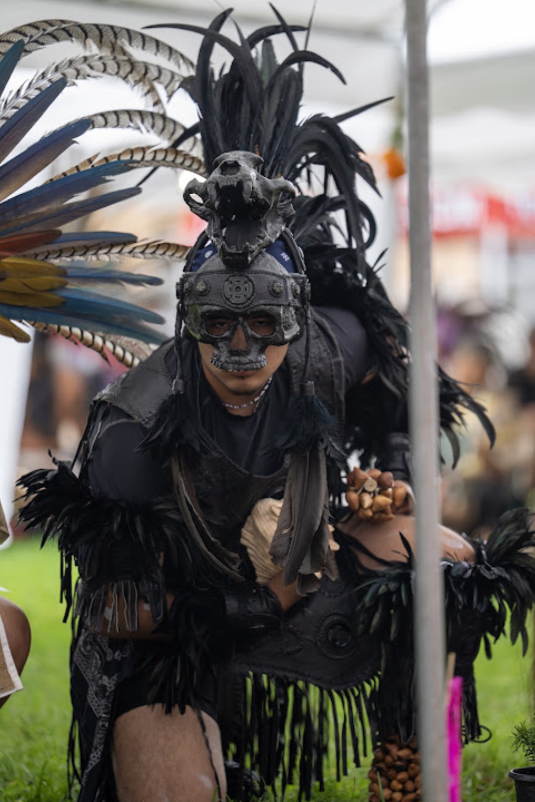
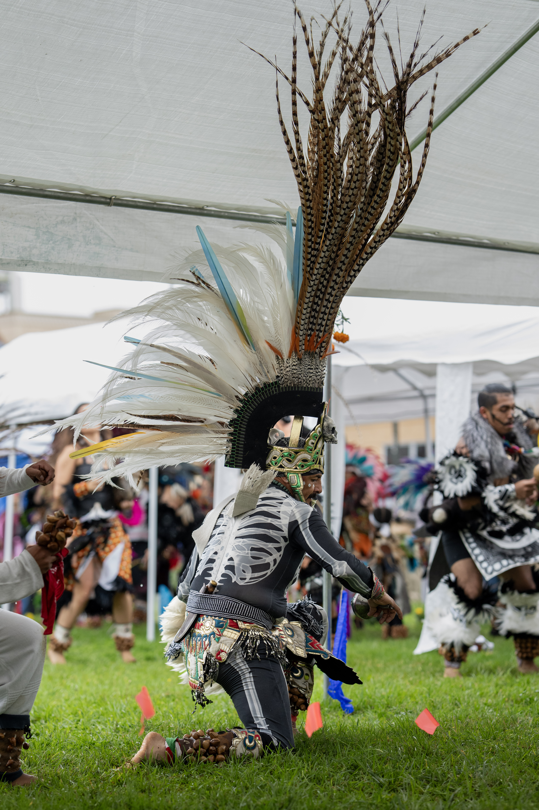
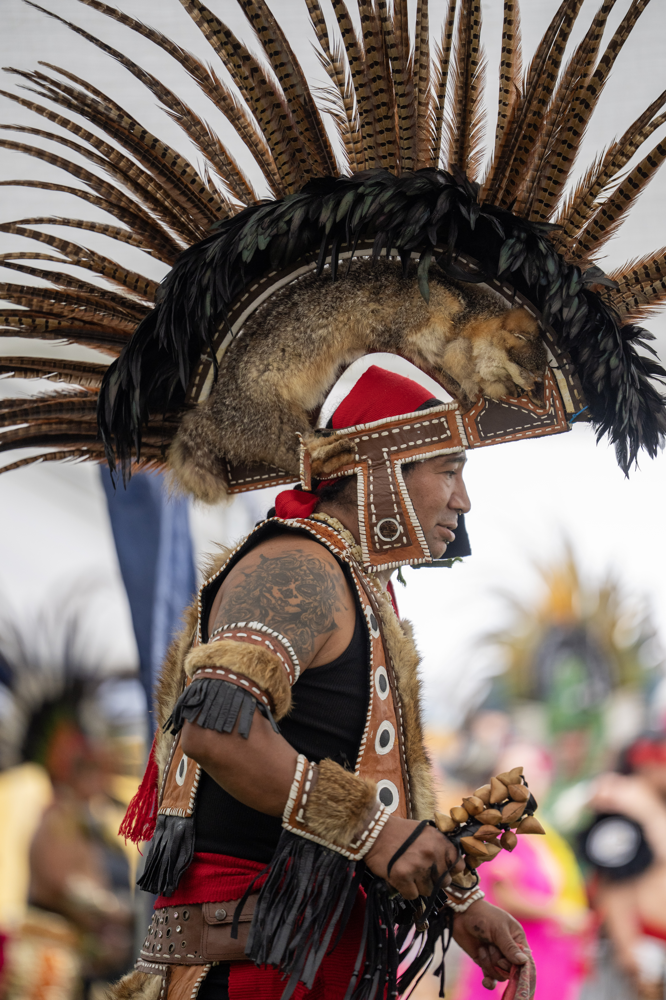
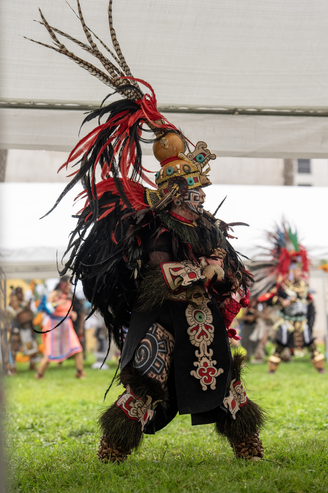
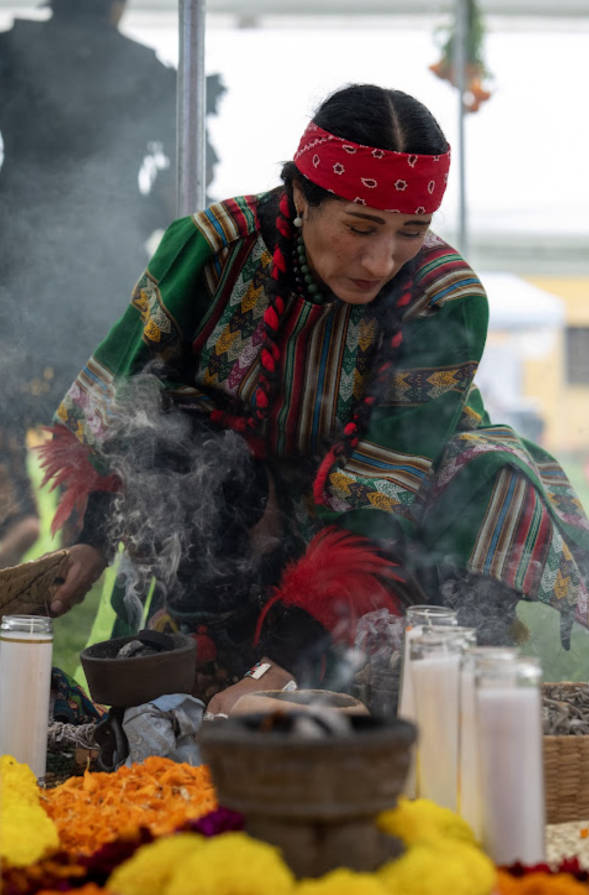
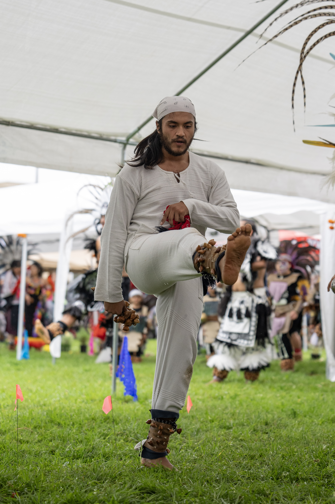
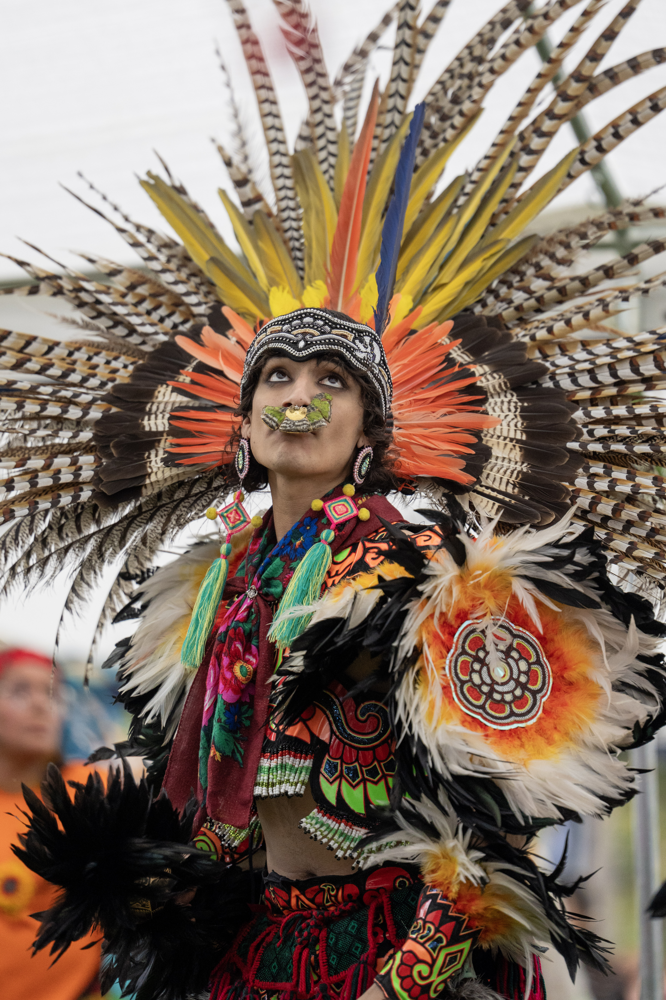
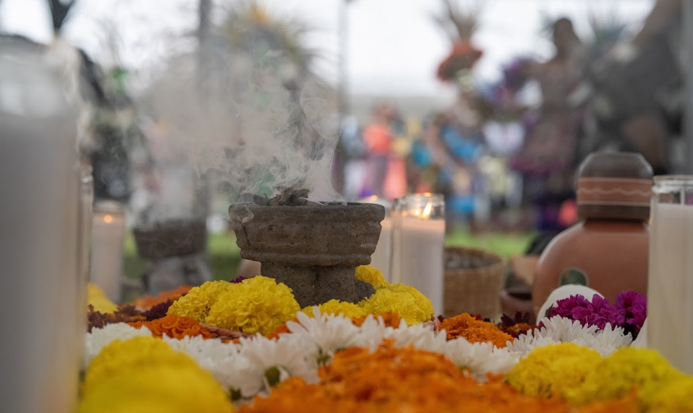
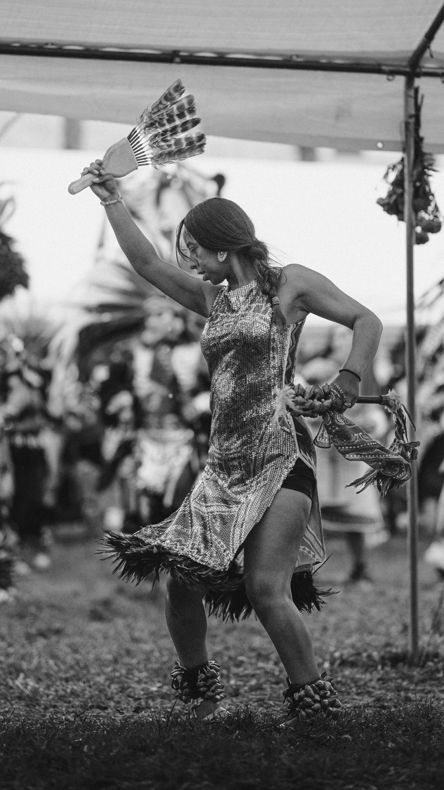
Explore photographs capturing moments of prayer, danza, community and remembrance throughout the ceremony.
Día de Muertos is a sacred tradition, dating back to the time of the Aztecs, centered on honoring and remembering our ancestors and loved ones who have passed. Families create an ofrenda adorned with cempasúchil, candles, and offerings to welcome their spirits back for a meaningful, celebratory reunion.
Yes. Everyone is welcome to attend and take part in honoring this tradition with us, regardless of background. We welcome the whole community to learn about and celebrate indigenous Mexica heritage alongside us.
Kalpulli Ehecacoatl hosts this ceremony annually in Watsonville, California. Follow us on social media or reach out through our Contact page for this year's date and details.
Members of Kalpulli Ehecacoatl help build the altar, lead the procession, and keep this ceremony alive each year. Visit our Join Us page to learn about becoming part of our community.
Follow us on social media to stay updated on this year's ceremony date and details.
Get in Touch